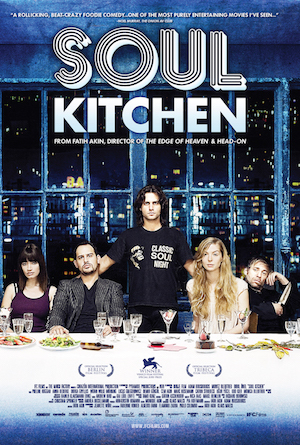
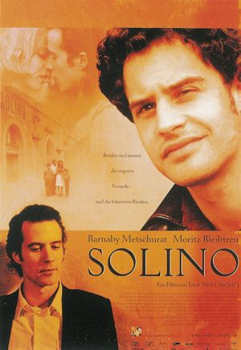
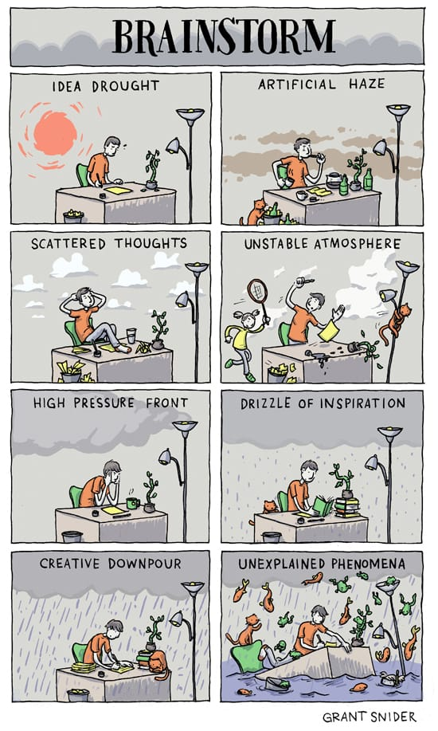

Sylvain Chauveau - Singular Forms (Sometimes Repeated)
Совсем минималистичный альбом с неожиданным и приятным вокалом :)
Совсем минималистичный альбом с неожиданным и приятным вокалом :)
Здорово!
Каждый год, когда наступает мой день рождения, я в уме подвожу итоги прошедшего года. Делаю себе какие-то пометки о том, что я сделал и чего достиг.
И в этом году мне в какой-то момент казалось, что то, что я ушел с работы в свободное плавание, окунулся во все эти договоры, счета, акты, в разные проекты и совершенно забытый для меня мир фриланса, это и есть то главное, что я успел сделать, то сейчас я понимаю, что, на самом деле, самое главное это то, что в декабре прошлого года я пошел заниматься музыкой.
Потому что как бы трудно мне ни было, как бы я ни паниковал порой, думая, что из всей этой затеи со своим собственным бизнесом ничего не выйдет, каждый раз, когда я выхожу от Люды (моего совершенно удивительного учителя), я ощущаю такой эмоциональный подъем, такую невероятную радость, что все проблемы и трудности кажутся мне совершенно ничтожными, и я начинаю с новой силой верить в то, что у меня непременно все получится.
Я до сих пор не могу, кажется, в полной мере осознать, что я это сделал. Это такой кайф :)

Снова Фатих Акин. И снова очень приятное кино :)

Отличное кино!
Клевый живой концерт Гонзалеса :)
Ураааа, новый альбом!!!!
На самом деле та знакомая сказала, что я всем интересуюсь, но ничем не увлекаюсь всерьез. Я до сих пор вспоминал это, до сих пор это причиняло мне боль и до сих пор было правдой.
Узнаю кое-кого)) Хорошая книжка.

Или вот We are introverts :)
И даже бесконечно :)